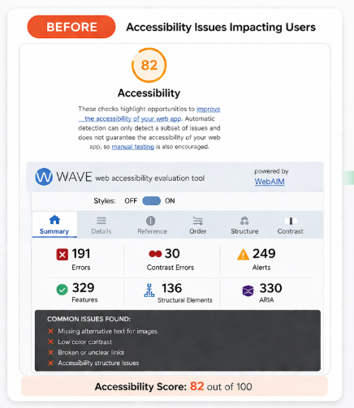
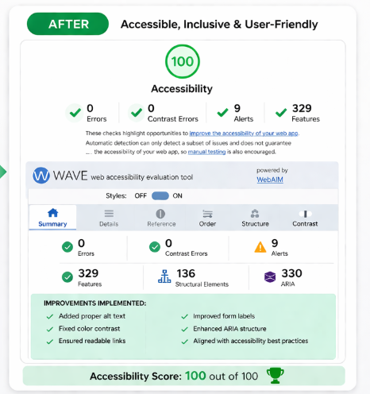

Free accessibility scan
Find WCAG issues on your website before they cost you users.
Enter your URL and I will manually review key accessibility blockers across keyboard access, screen reader support, forms, contrast, headings, and common ADA/WCAG risk areas.
Manual review within 24 hours. No commitment, no automated-only score dump.
Real accessibility work, shown with evidence
What Clients Value
"The report was clear and easy for our developer to act on. We knew which accessibility issues mattered first."
Small business website owner
"Himanshu explained the WCAG problems in plain language and helped us move from findings to fixes quickly."
Website remediation client
Accessibility Services
From manual accessibility audits to hands-on remediation, I help teams fix real usability barriers instead of delivering generic reports only.
See ServicesCore Website Accessibility Services
WCAG Accessibility Audit
Manual review for WCAG 2.2 issues including keyboard access, headings, forms, alt text, contrast, ARIA, and screen reader barriers.
ADA Website Compliance Support
Practical accessibility review and remediation guidance for small businesses serving users in the United States.
WordPress Accessibility Fixes
Fix theme, plugin, form, menu, button, contrast, and content issues that commonly block WordPress accessibility.
What I Help With
Website Accessibility Audits (WCAG Compliance)
Find critical accessibility issues that may cause compliance risks and poor user experience.
ADA and Section 508 Fixes
Get clear reports plus hands-on help fixing accessibility issues properly.
PDF Accessibility
Ensure your PDFs are accessible for screen readers and meet WCAG standards.
Website Accessibility Audit & WCAG Compliance Services
My website accessibility audit service helps businesses identify WCAG compliance issues, fix ADA accessibility problems, and improve usability across websites, web apps, and PDFs.
Why Work With Me
Accessibility-only focus
I work on WCAG audits, ADA support, remediation, and PDF accessibility instead of broad general development.
Plain-English findings
You get clear priorities, screenshots, user impact notes, and fix guidance your team can understand.
Help beyond the report
I can support remediation after the audit so issues move from a spreadsheet into actual fixes.
Sample Accessibility Audit (Before & After Fixes)
Real example of accessibility issues identified and fixed to improve WCAG compliance and usability.
Before Fix

Issues included missing labels, poor contrast, unclear structure, and screen reader usability barriers.
After Fix

Fixes improved labels, navigation clarity, visual readability, and screen reader support.
What You Get in My Accessibility Audit
A practical accessibility report designed to help you understand issues quickly and fix them without confusion.
Severity-Based WCAG Findings
Clear issue breakdown so you can prioritize critical, serious, and moderate accessibility barriers first.
Developer-Friendly Fix Guidance
Actionable recommendations written to help developers and site owners implement changes faster.
Screenshot Evidence
Visual proof of issues so your team can understand where the problem appears and why it matters.
Remediation Checklist
A focused checklist to track fixes, improve accountability, and move your site toward better compliance.
Quick Accessibility Check - $19
For site owners who want a paid starter review before a full audit or remediation project.
See PricingFrequently Asked Questions
Do you work with US clients?
Yes. I support businesses serving users in the United States and can work remotely on audits, remediation, and PDF accessibility projects.
Do you only report issues?
No. I can help identify accessibility issues and also support the remediation work needed to fix them.
What types of assets do you review?
Websites, web apps, landing pages, components, forms, and PDFs.
Website Accessibility Audit Service Explained
A website accessibility audit helps identify issues that prevent users with disabilities from accessing your website. These issues may include missing alt text, poor color contrast, keyboard navigation problems, and screen reader compatibility issues.
Fixing accessibility issues improves usability, helps meet WCAG guidelines, and reduces the risk of ADA compliance problems. Businesses that serve users in the United States often need accessibility audits to support legal compliance and improve user experience.
My accessibility audit service provides clear issue reports, practical fix recommendations, and optional remediation support to help you improve your website quickly.
Get Your Free Accessibility Audit
Send your website and I will show you exactly what accessibility issues need to be fixed.
Run Free Scan